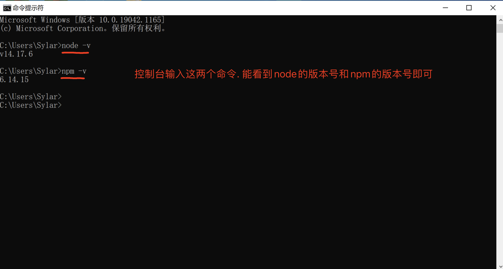

一 . PyExecJS模块
pyexecjs是一个可以帮助我们运行js代码的一个第三方模块. 其使用是非常容易上手的.
但是它的运行是要依赖能运行js的第三方环境的. 这里我们选择用node作为我们运行js的位置.
1.1 安装Nodejs



切记. 重启pycharm或者重启电脑.
1.2 安装pyexecjs
pip install pyexecjs
测试一下:
import execjs
print(execjs.get().name) # 需要重启pycharm或者重启电脑 Node.js (V8)
1.3 简单使用
import execjs
print(execjs.get().name)
# execjs.eval 可以直接运行js代码并得到结果
js = """
"鲁班_王昭君_猴子_亚瑟_蔡文姬".split("_")
"""
res = execjs.eval(js)
print(res)
# execjs.compile(), call()
# execjs.compile() 事先加载好一段js代码,
jj = execjs.compile("""
function an(a, b){
return a + b
}
""")
# call() 运行代码中的xxx函数. 后续的参数是xxx的参数
ret = jj.call("an", 10, 20)
print(ret)
windows中如果出现编码错误. 在引入execjs之前. 插入以下代码即可.
import subprocess
from functools import partial
subprocess.Popen = partial(subprocess.Popen, encoding='utf-8')
import execjs
完事儿. 你没有看错. execjs就这几个功能就够咱用的了.
1.4 浏览器设置
浏览器点击右上角齿轮. 进行配置.
配置一.

配置二.